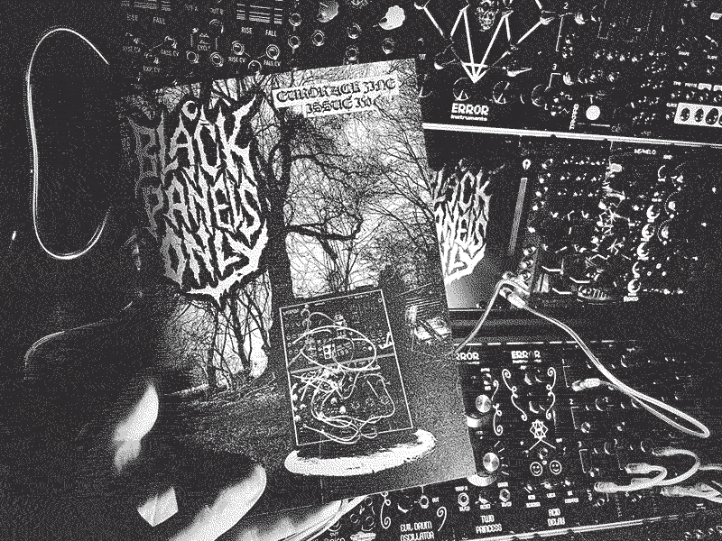
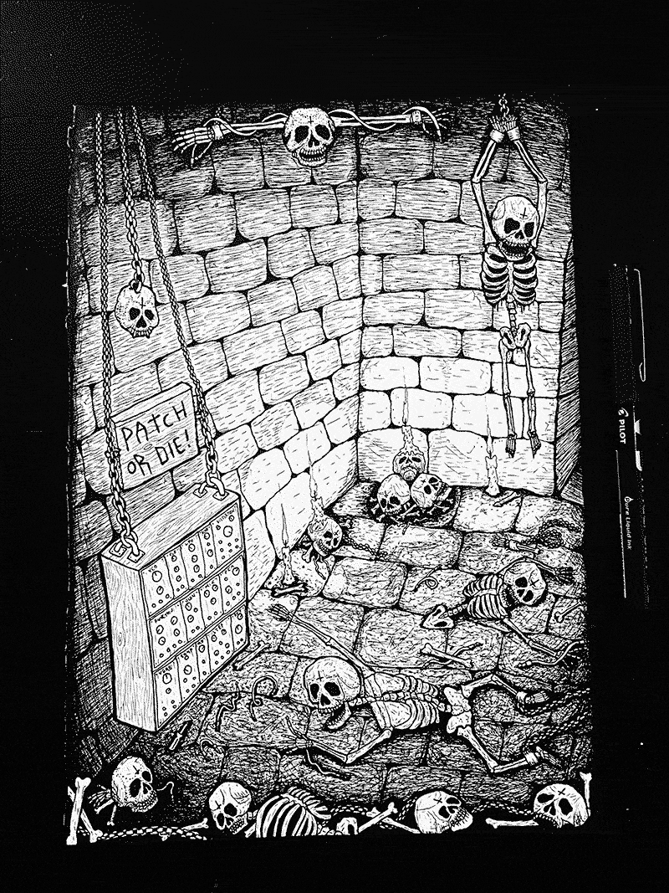

Issue IV

After the brighter Halloween colours of Issue III, I wanted to return to and kinda double down on the old school black metal-zine aesthetic. I switched printers between issues because the previous one kept messing up the order (missing pages, upside-down pages and other problems) and the new printer has stricter demands around ink saturation, which is something i’d never worried about. The end result was that I had to put a hard limit on the density of ink in my designs but I found I actually preferred the end result- the slightly faded, more matte-finish rather than the glossy finish of the earlier print runs of Issues I and II.
Noise Engineering were up for answering some questions and it hadn’t been too long since they’d released their range of distortion modules, so I figured I’d make distortion a loose theme for the issue, so Ritual Electronics and Schlappi rounded it off perfectly. I was also really psyched to include blackened noise band Sutekh Hexen who make some super dense bleak ritualistic sounds and have released music on the best labels for post-industrial/dark ambient type business- Cold Spring, Sentient Ruin, Cyclic Law.
While working on this one, MarkTModular got in touch, whose illustrated sci-fi-themed panels you might recognise from Eurorack forums and has made blanks for the likes of DivKid, Signal Sounds & Elevator Sound. The initial idea was just to get panels of the logo but Mark suggested we may as well get something printed on each side and he came up with an awesome Nosferatu illustration.
I didn’t include any freebies with this issue but it did have 4 extra pages (48 pages rather than the usual 44). I always wanted to maintain a good balance of giving value for money but also having a chance that people will be able to read the whole thing before the next issue comes out (assuming people are like me that buy more zines than they find time to read!). I think 44 pages is usually a good size but it’s good to break from your own rules now and then for a bit of variety.
For the cover image, I’d put together a mini case to get my head around ERD’s mysterious All the Colours of the Noise, so took it to my parents house on the outskirts of the Forest of Dean and took some photos in front of an old shack which I think used to be a pig sty a long long time ago. I think this cover is the one I’m happiest with so far, because it just totally encapsulates my vision when I started the zine.
Illustration for editorial page:

Released 12th March 2021.
Features:
- Noise Engineering
- Julia Bondar
- Sutekh Hexen
- Blakmoth
- Ritual Electronics
- Schlappi Engineering
- Drawing a Blank / MarkTModular
- Distortion by Ben Chilton
- Illustrations by Coffin Nachtmahr
- My Rack - Thoow
- Reviews: Blood & Dust, Schwarzgerät, Svønd, Carrion
- Module Review: Noise Engineering Desmodus Versio
- Module Review: ERD All the Colours of the Noise
- Module Review: Serpens Modular Hydrus